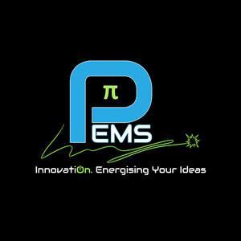

Trade Mark Journal No.2025/014 4 April 2025
UK00004150735 21 January 2025 (11,37)

- Class 11
- Electric lighting installations; Installations for electric lighting; Electric heating installations; Electric indoor lighting installations; Heating installations.
- Class 37
- Installation of electrical earthing; Installation of electrical grounding; Electrical installation services; Installation of electrical and generating machinery; Repair of electrical equipment and electrotechnical installations; Electric appliance installation ; Electric appliance installation and repair; Installation and maintenance of photovoltaic installations; Renovation of electrical wiring; Heating equipment installation; Electrical wiring services; Renovation, repair and maintenance of electrical wiring; Heating equipment installation and repair; Installation and repair of heating equipment; Installation of electricity generators; Maintenance and repair of electrical earthing systems; Installation of motors; Repair of electrical equipment; Installation, repair and maintenance of heating equipment; Installation of lighting systems; Machinery installation; Lighting apparatus installation; Installation of lighting apparatus; Maintenance and repair of solar power installations; Installation of electric light and power systems; Maintenance of commercial electrical systems; Installation of lightning conductors; Installation of residential solar panel power systems; Repair or maintenance of electric lighting apparatus; Maintenance, repair and reconditioning of photovoltaic apparatus and installations; Installation of non-residential solar panel power systems; Maintenance and repair of energy generating installations; Charging of electric vehicles; Vehicle battery charging; Recharging services for electric vehicles.
P.P. Electro-Mechanical Services Limited